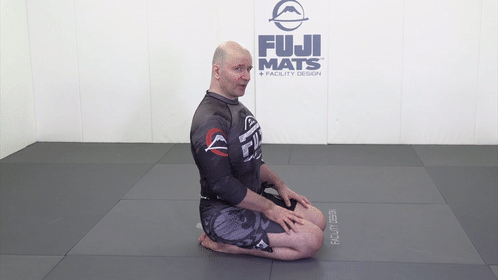

Training spine
4.1 Spine
- Сгибаем-разгибаем позвоночник (1.gif) 
- Круг на плечах (2.gif)
- Круг без рук (3.gif)
- Катаемся на спине (4.gif)
- Соединяем с кругом на плечах/шее (5.gif)
- Продвинутый мост - переходим под углом 90 в обе стороны (6.gif)
- Делаем мост без перерыва (7.gif)
- Ошибка - не доводить мост до конца (8.gif)
- Качаем шею (9.gif)